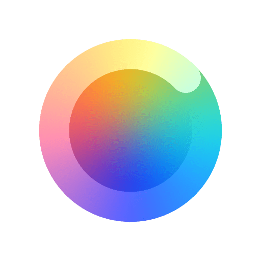
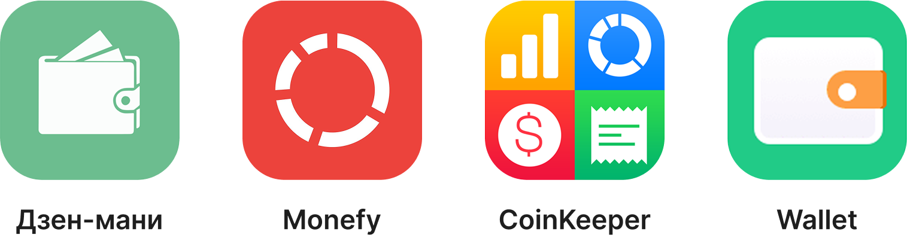
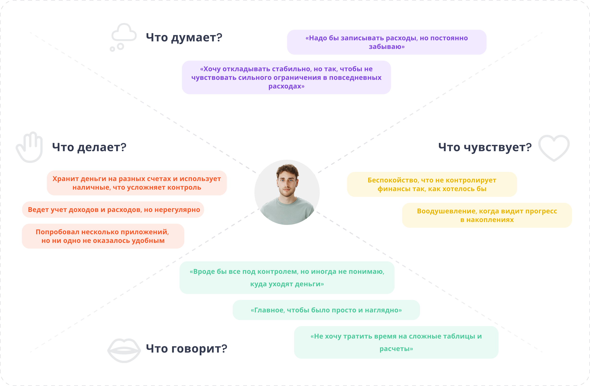

Fintrack — трекер финансов и целей
UX/UI design
·
Mobile App
·
2023
О проекте
Fintrack — мобильное приложение для учета финансов, которое помогает контролировать бюджет, анализировать расходы и достигать финансовых целей.
Целевой рынок: глобальный (фокус на пользователей, стремящихся к финансовой грамотности).
📌 Задача
Разработать удобное и интуитивно понятное приложение для отслеживания финансов. Необходимо сделать этот процесс простым, понятным и мотивирующим, чтобы пользователи могли уверенно управлять своими финансами и достигать финансовых целей.
⚡️ Решение
Я разработала концепцию приложения, которое охватывает весь процесс управления финансами:
✦ Удобное добавление транзакций.
✦ Визуализация расходов, позволяющая быстро оценить ситуацию.
✦ Графики о состоянии средств и статистика расходов по категориям.
✦ Возможность создавать и отслеживать цели (накопления, крупные покупки), динамика прогресса.
✦ Эмоциональный, но чистый UI, не отвлекающий от основной задачи.
⭐️ Результат
Проект, который делает финансовый контроль доступным и удобным.
Потенциал масштабирования: интерфейс готов к адаптации под разные рынки и аудитории.
Процесс проектирования
1. Изучение предметной области: анализ других приложений по учету финансов.
2. Формирование гипотез.
3. Определение целей и ключевых проблем.
4. Сценарии, JTBD, user flow.
5. Проработка решения: финальный дизайн и описание идей.
Исследование
Чтобы определить целевую аудиторию и понять, насколько актуален такой функционал, я решила провести несколько интервью. Мне было важно узнать, как люди в целом следят за своими финансами, какими инструментами пользуются для управления бюджетом и используют ли их вообще. Также я спросила, как они копят на свои мечты и цели: просто держат суммы в голове или используют какие-то инструменты для визуализации. Это помогло глубже понять потребности пользователей и учесть их в проекте.
Основные вопросы, которые мне было важно выяснить:
❓ Отслеживаете ли вы свои ежемесячные расходы и доходы?
❓ Если да, то какими инструментами пользуетесь?
❓ Если нет, то почему?
❓ С какими трудностями сталкиваетесь при использовании приложений и анализе финансов?
❓Какое приложение для управления финансами вы бы назвали идеальным?
❓ Какие инструменты и функции для вас наиболее важны и почему?
❓ Пользуетесь ли вы каким-то инструментом для визуализации своих целей?
Инсайты
После проведения интервью я выделила несколько ключевых инсайтов:
1
Люди пользуются разными инструментами, но не всегда довольны ими.
1 Люди пользуются разными инструментами, но не всегда довольны ими.
Часто люди имеют разные счета в разных банках. В одном банке у них зарплатная карта, в другом - кредитная, в третьем - накопительный счет. Из-за этого сложно вести общий учет, что часто приводит к лишним тратам.
2
Многие копят на крупные цели, но не имеют четкой системы.
2 Многие копят на крупные цели, но не имеют четкой системы.
Кто-то просто держит сумму в голове, кто-то откладывает деньги на отдельный счет, но нет удобного визуального инструмента, который показывал бы прогресс.
3
Большинство людей хотят контролировать свои финансы, но не делают этого систематически.
3 Большинство людей хотят контролировать свои финансы, но не делают этого систематически.
Многие отмечают, что начинали вести учет, но быстро забрасывали, потому что это занимало много времени или было неудобно.
Проблема
Обобщив все полученные выводы и инсайты, я сформулировала основную проблему:
‼️
Людям сложно учитывать доходы и расходы, потому что большинство существующих решений либо перегружены, либо неудобны, либо не дают полной картины финансов. Дополнительно возникает проблема разрозненных счетов в разных приложениях и наличных расходов, которые невозможно вносить вручную.
Гипотезы
После я сформировала гипотезы — какие решения сделают приложение удобнее и полезнее. Дальше проверяла их, продумывала, как они впишутся в интерфейс и помогут пользователям.
1
Статистика и аналитика
1 Статистика и аналитика
Если показывать расходы и доходы в виде графиков и диаграмм, то пользователи будут быстрее понимать, куда уходят их деньги.
2
Интуитивность
2 Интуитивность
Если интерфейс будет простым и понятным, то люди смогут быстро разобраться и начать пользоваться приложением.
3
Финансовые цели
3 Финансовые цели
Добавление финансовых целей дополнит приложение новым функционалом и привлечет еще больше пользователей.
4
Категории трат
4 Категории трат
Если дать возможность редактировать категории и создавать свои, то каждый сможет подстроить приложение под свои финансовые привычки.
5
Мотивация
5 Мотивация
Визуализация финансовых целей может придать мотивации пользователям откладывать и копить еще осознанней.
6
Необязательная авторизация
6 Необязательная авторизация
Если сделать авторизацию необязательной, то пользователи смогут сразу получить доступ ко всем основным функциям без лишних шагов. Это снизит барьер входа.
Анализ конкурентов
Также я проанализировала другие приложения для учета финансов, посмотрела, какие функции предлагают конкуренты, что у них удобно, а что может вызывать сложности у пользователей. Это помогло мне понять, какие моменты стоит учесть и улучшить, чтобы сделать приложение не только полезным, но и удобным.

Юзер персона
Алексей, 30 лет
Род деятельности
Разработчик ПО
Мотивация
— Хочет грамотно управлять своими финансами, чтобы достичь целей.
— Стремится к финансовой стабильности и независимости.
— Стремится к финансовой стабильности и независимости.
Цели
— Копит деньги к лету на семейный отпуск.
— Откладывает часть зарплаты на покупку своего дома.
— Хочет избежать хаоса в финансах и видеть реальную картину своих доходов и расходов.
— Откладывает часть зарплаты на покупку своего дома.
— Хочет избежать хаоса в финансах и видеть реальную картину своих доходов и расходов.
Болевые точки
— Доходы и расходы распределены между разными счетами и наличными.
— Отсутствие удобного инструмента для отслеживания накоплений на крупные цели.
— Отсутствие мотивации и напоминаний о достижении финансовых целей.
— Отсутствие удобного инструмента для отслеживания накоплений на крупные цели.
— Отсутствие мотивации и напоминаний о достижении финансовых целей.
Карта эмпатий

Решение
Главный экран с бюджетом
Главный экран показывает пользователю его финансовое состояние: баланс, сколько было потрачено в этом месяце, недавние расходы, популярные категории трат. Здесь собрана вся ключевая информация, чтобы быстро оценить ситуацию без лишних переходов.
✔ Основные показатели крупные и наглядные.
✔ Можно быстро добавить новую транзакцию.
✔ Нет перегруженности — только важные данные.
✔ Основные показатели крупные и наглядные.
✔ Можно быстро добавить новую транзакцию.
✔ Нет перегруженности — только важные данные.

Добавление транзакции
Пользователь может быстро добавить транзакцию, введя сумму и выбрав категорию, счет и дату. Можно также оставить комментарий.
Я пыталась сделать процесс добавления транзакции наиболее простым — табы с часто используемыми суммами, удобный выбор счета и даты, понятные категории с иконками. Все действия выполняются за несколько секунд, без лишних шагов.

История
Раздел показывает все транзакции пользователя — траты и поступления. Моя задача заключалась в том, чтобы сделать список транзакций максимально читаемым и структурированным: я добавила фильтры для быстрого поиска, визуально разделила траты и поступления, а также дополнила экран информацией об общей сумме расходов и доходов.
Детали транзакции
Открывается при нажатии на операцию в истории. Здесь отображается вся информация о транзакции (сумма, дата, счет, категория, комментарий). Пользователь может отредактировать или удалить операцию.
Аналитика
Одна из главных функциональных фичей приложения — раздел с аналитикой. Здесь пользователь может отслеживать динамику доходов и расходов, выявлять общие тенденции и понимать, куда уходят деньги.
Доступны два типа графиков: линейный — для динамики доходов и расходов, круговой — для распределения трат по категориям. Ключевые показатели — сумма, сравнение с прошлым периодом и средние значения. Минималистичный дизайн и интерактивные подсказки делают данные более наглядными.
Фильтры
Можно настроить аналитику под свои нужды с помощью фильтров: выбрать конкретный счет и одну или несколько категорий расходов. По умолчанию отображается период — текущий месяц, но пользователь может изменить его, выбрав нужный диапазон.
Раздел цели & Детали
Еще один важный функциональный раздел приложения — финансовые цели. Он задуман как инструмент для осознанного управления финансами и должен помогать пользователям не просто откладывать деньги, а видеть конкретную цель и следить за прогрессом.
Главная задача — сформировать у людей привычку накопления, сделать ее удобной и даже немного игровой. Все это должно снизить стресс от финансового планирования, помочь достичь целей и превратить деньги из абстрактных цифр в инструмент для исполнения желаний.
Создание цели
Создание цели представляет собой пошаговый процесс, где пользователь последовательно вводит данные: название цели, желаемую сумму накоплений, текущий баланс, срок достижения, а также дату начала накопления.
Такой формат минимизирует когнитивную нагрузку. Процесс заполнения максимально прост, а прогресс бар помогает пользователю понимать, на каком этапе он находится.
Настройки & Профиль
В настройках можно изменить ключевые параметры, такие как валюту, категории трат, счета, бюджет и визуальное оформление. Авторизация необязательна: можно сразу пользоваться основными функциями, а при желании — создать аккаунт для сохранения данных. Это делает приложение удобным и доступным для всех.
Авторизация & Регистрация
Если пользователь хочет сразу приступить к учету своих финансов, он может начать без регистрации. Однако авторизация через e-mail открывает дополнительные возможности:
✔ Сохранение данных — пользователь не потеряет информацию при смене устройства.
✔ Синхронизация — доступ к данным с разных устройств.
✔ Безопасность — защита данных с помощью учетной записи.
✔ Сохранение данных — пользователь не потеряет информацию при смене устройства.
✔ Синхронизация — доступ к данным с разных устройств.
✔ Безопасность — защита данных с помощью учетной записи.
Результат
Разработка Fintrack стала полноценным исследованием пользовательских потребностей в области финансового планирования. В процессе работы я детально изучила существующие решения, провела анализ поведения пользователей и выявила основные проблемы, с которыми они сталкиваются. Это позволило создать продукт, который действительно упрощает контроль за финансами и делает управление бюджетом удобным и понятным.
Финальное решение — это не просто финансовый трекер, а инструмент, который помогает пользователям осознанно управлять своими деньгами. Он сочетает удобство, аналитику и гибкость, обеспечивая пользователям контроль над своими расходами без лишних усилий.
Я сосредоточилась на создании интуитивного интерфейса, где каждая деталь работает на удобство пользователя. Минималистичный, но информативный дизайн помогает быстро ориентироваться в функционале, а продуманные сценарии взаимодействия снижают когнитивную нагрузку. Каждый экран был спроектирован с учетом реальных потребностей пользователей, что позволило сделать навигацию логичной и доступной.